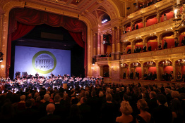

San Diegói árulás, avagy az Álruhás Amerikában
Mozart egyik tinédzserkori operája a La finta giardinera, vagyis Az álruhás kertészlány.
Valamikor két évvel ezelőtt a San Diegó-i csapat, a fiatal énekesek számára operaprojektek szervezésével és megvalósításával foglalkozó Opera Neo azzal keresett meg minket, hogy vigyük színre közösen. Nekünk van műhelyünk és Műhelyházunk (gyártani és előadni), nekik pénzük és ötletük – fiatal énekesek és zenekar pedig mindkét kontinensen rendelkezésre áll. Az előadást az OPERA művészeti igazgatója, Almási-Tóth András rendezte, minimális díszlettel, jelmezzel, és egy különleges páston játszatva a cselekményt, amely majd abban a San Diegó-i iparcsarnokban is elfér, amelyben a produkció kinti lába megvalósul.
Nyár elején eljött hozzánk a kinti zenekar néhány kulcsjátékosa, és a Budapestről odaszármazott, a Zeneakadémiára velem párhuzamosan járt Kozma Péter vezényletével betanultuk és eljátszottuk a darabot. A művet, amelyet énekkartól és néhány jelenettől „megtisztítva", a mai hallgathatóság időbéli határaiig visszahúzva állítottunk össze.
Az MVM Dome-ban mutatják be az Egri csillagokat
Újabb gigaprodukcióra készül a Nemzeti Színház társulata és a Magyar Nemzeti Táncegyüttes. 2022. október 20-án mutatják be az MVM Dome-ban az Egri csillagok című előadást, amely a két kulturális intézmény együttműködésével valósult meg 2018-ban. A minden eddiginél hatalmasabb térben gyakorlatilag egy új produkció születik majd. A rendkívüli bemutató egészen közel esik Gárdonyi Géza halálának centenáriumához, az író ugyanis 1922. október 30-án halt meg. Az előadás így az ő emléke előtt is tiszteleg.
Az MVM Dome-ban a mintegy 1800 négyzetméteres játéktéren, több száz fős szereplőgárdával, hatalmas apparátussal, és – Székely László tervezésében – teljesen új díszletek között mutatják be az alkotók a produkciót. Az impozáns, összesen 13500 fémlemezkével borított díszletelemekkel, valamint a kellékekkel és a jelmezekkel 10 kamion érkezik majd az előadás helyszínére a héten, ahol megkezdik az építést, vasárnapra pedig már a helyükön lesznek a látványelemek. Összességében mintegy 10 kőszínházi előadás közönsége, azaz 6359 néző fogja megtölteni a csarnokot, az ülőhelyek mellett 12 kerekesszékes hely is kialakításra kerül.
A 83 éves Korda György: személyes tragédiáktól a Reptér-őrületig
„Nem tudom, hogy ez az Isten ajándéka vagy az embereké, hogy 83 évesen is ilyen sokan szeretnek." - mondta az Origónak Korda György, aki arról is beszélt, hogy 1945-ben egy hajszálon múlt az élete, de mesélt a fiatalkori barátairól, például Latinovits Zoltánról és Balázs Fecóról, és azt is elmondta, hogy nagyon meghatotta, amikor a nyolcvanadik születésnapjára Orbán Viktor miniszterelnöktől személyes köszöntőlevelet kapott, amit be is kereteztetett.
Minden rekordot megdöntött idén a Budapest Park
Az idén tíz éves szórakozóhely és kulturális komplexum csúcstechnológiás hangrendszerrel és lenyűgöző látványvilággal indította - három év után végre a tervezett időpontban - idei évadát, amely minden eddiginél sikeresebbnek bizonyult. Rengeteg külföldi világsztárt és a hazai zenei élet krémjét vonultatták fel, amire közel 610.000 ember volt kíváncsi.

2022-ben is a legkülönfélébb zenei stílusokból csemegéztek, és minden eddiginél több nemzetközi koncertet bonyolítottak le:
ÁPRILIS KÖZEPÉTŐL OKTÓBERIG 88 KONCERTNAPON ÖSSZESEN 176 KÜLÖNBÖZŐ ZENEKAR FORDULT MEG AZ IDÉN RADIKÁLIS FEJLESZTÉSEN ÁTESETT NAGYSZÍNPADON. OLYAN VILÁGSZTÁROKAT IS VENDÉGÜL LÁTTAK, MINT A PET SHOP BOYS, A DEFTONES, A MY CHEMICAL ROMANCE VAGY BILLY IDOL.
György Ádám: Óriási büszkeség most New Yorkban magyarnak lenni
A világ három kontinenséről jelentkeztek kiváló zongoraművészek, rendkívüli feladat volt a zsűri számára négy művészt kiválasztani. Külön öröm számomra, hogy a döntősök közé egy magyar versenyző, Kovács Gergő Junior Prima-díjas zongoraművész is bejutott. Mellette a tajvani Yi-Chen Feng, a japán Eri Yamamoto és az amerikai Maxim Lando versenyez majd.
Megrázó részletek Szakcsi Lakatos Béla haláláról
Október 2-án meghalt Szakcsi Lakatos Béla, Kossuth-díjas zongoraművész, zeneszerző, a magyar jazz ikonikus alakja. Édesapja haláláról a fia, Róbert beszélt lapunknak.
Tudtuk, hogy nem volt teljesen egészséges, a szívével többször is volt problémája, mű szívbillentyűvel élt, sajnos infarktusa is volt, ehhez jött már régóta a szívelégtelenség, ez vezetett a halálához - mondta a lapnak Róbert, aki azt is elárulta, A BETEGSÉGEK ELLENÉRE SEMMILYEN ELŐJELE NEM VOLT A TRAGÉDIÁNAK, hiszen pénteken még a Pestújhelyi Közösségi Házban lépett fel Gerendás Péter oldalán.